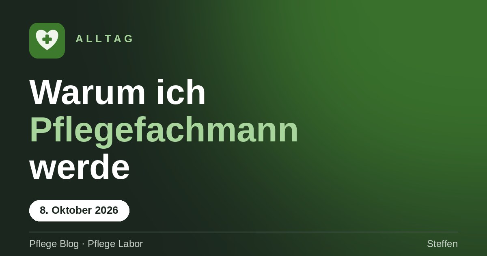
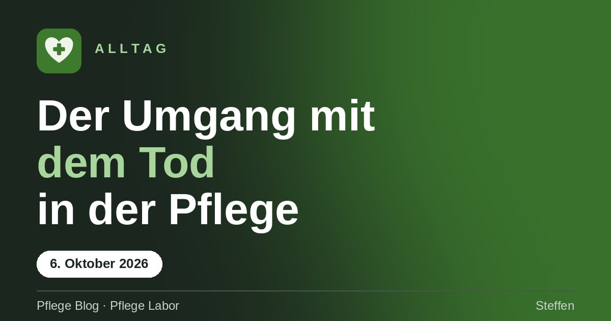
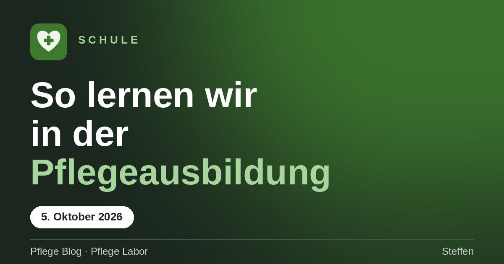
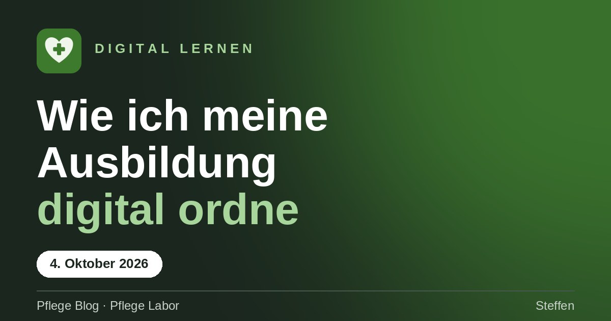
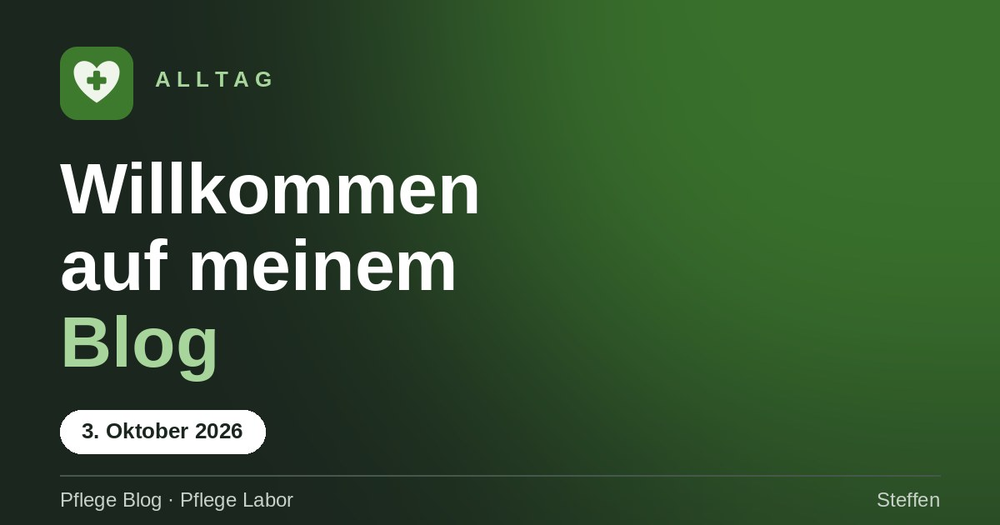

Blog
Beiträge
Erfahrungen aus der Ausbildung, Lerntipps und Fachthemen. Sortiere nach Rubrik.

AlltagWarum ich Pflegefachmann werde
Mein Umweg in die Pflege, was mich an der Arbeit mit Menschen mit Demenz bewegt und was ich vorhabe.

AlltagDer Umgang mit dem Tod in der Pflege
Wenn ein Bewohner verstirbt: Beziehung, Arbeitsmodus und warum Trauern keine Schwäche ist.

SchuleSo lernen wir in der Pflegeausbildung
Fallbeispiele, selbst lesen, Aufgaben und gemeinsam besprechen.

Digital lernenWie ich meine Ausbildung digital ordne
Warum ich nach CE Einheiten sortiere und nicht nach Lehrern.

AlltagWillkommen auf meinem Blog
Warum ich diesen Blog schreibe und was dich hier erwartet.